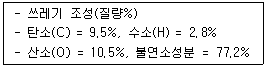
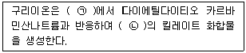
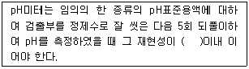
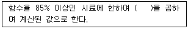
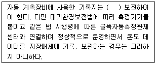
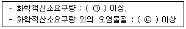
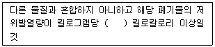

폐기물처리산업기사 (2018-04-28 기출문제)
1과목: 폐기물개론
1. 지정폐기물에 대한 설명으로 틀린 것은?
- pH가 2이하인 폐산은 지정폐기물이다.
- pOH가 1.5이하인 페알카리는 지정폐기물이다.
- 농촌에서 농부가 사용하고 남은 폐농약은 지정폐기물이다.
- 샌드블라스트 폐사에서 0.3mg/L이상의 카드뮴이 용출되어 나오면 지정폐기물에 해당된다.
(정답률: 77%)

2. 우리나라 인구 1인당 1일 생활쓰레기 평균 발생량(kg)으로 가장 알맞은 것은?
- 약 0.2
- 약 1.0
- 약 2.2
- 약 3.2
(정답률: 87%)
3. 쓰레기 발생량 조사방법 중 물질수지법에 관한 설명으로 옳지 않은 것은?
- 시스템에 유입되는 대표적 물질을 설정하여 발생량을 추산하여야 한다.
- 주로 산업폐기물의 발생량 추산에 이용된다.
- 물질수지를 세울 수 있는 상세한 데이터가 있는 경우에 가능하다.
- 우선적으로 조사하고자 하는 계의 경계를 정확하게 설정하여야 한다.
(정답률: 78%)
4. 도시 일반폐기물의 조성성분 중 가장 적게 차지하는 성분이라고 생각되는 것은?
- 수분
- 황
- 탄소
- 산소
(정답률: 82%)
5. 폐기물의 밀도가 200kg/m3인 것을 500kg/m3으로 압축시킬 때 폐기물의 부피변화는?
- 60% 감소
- 64% 감소
- 67% 감소
- 70% 감소
(정답률: 91%)
6. 쓰레기 재활용 측면에서 가장 효과적인 수거방법은?
- 집단수거
- 타종수거
- 분리수거
- 혼합수거
(정답률: 78%)
7. pH가 3인 폐산 용액은 pH가 5인 폐산 용액에 비하여 수소이온이 몇 배 더 함유되어 있는가?
- 2배
- 15배
- 20배
- 100배
(정답률: 81%)
8. 쓰레기 수거 시 물과 섞어 잘게 분쇄한 뒤 용적을 감소시켜 수거하며, 반드시 폐수처리시설이 있어야만 사용할 수 있는 장치는?
- Pulverizer
- Stationary Compactors
- Baler
- Rotary Compactors
(정답률: 61%)
9. 쓰레기 발생량에 영향을 주는 모든 인자를 시간에 대한 함수로 나타낸 후, 시간에 대한 함수로 표현된 각 영향인자들간의 상관관계를 수식화하는 쓰레기 발생량 예측 모델은?
- 시간인지회귀모델
- 다중회귀모델
- 정적모사모델
- 동적모사모델
(정답률: 84%)
10. 쓰레기의 물리적 성상분석에 관한 설명으로 틀린 것은?
- 수분함량을 측정하기 위해서는 1⑤~110℃에서 4시간 건조시킨다.
- 회분함량 측정을 위해 가열하는 온도는 600±25℃이어야 한다.
- 종류별 성상분석은 일반적으로 손선별로 한다.
- 쓰레기 밀도는 겉보기밀도가 아닌 진밀도를 측정하여야 한다.
(정답률: 73%)
11. 수거노선 설정 시 유의사항으로 적절하지 않은 것은?
- 고지대에서 저지대로 차량을 운행한다.
- 다량 발생되는 배출원은 하루 중 가장 나중에 수거한다.
- 반복운행, U자 회전을 피한다.
- 가능한 한 시계방향으로 수거노선을 정한다.
(정답률: 89%)
12. 다음 중 특정 물질의 연소계산에 있어 그 값이 가장 적은 값은?
- 실제 공기량
- 이론 연소가스량
- 이론 산소량
- 이론 공기량
(정답률: 68%)
13. 인구가 6,000,000명이 사는 도시에서 1년에 3,000,000ton의 폐기물이 발생된다. 이 폐기물을 4,500명의 인부가 수거할 때 MHT는? (단, 수거인부의 1일 작업시간 = 8시간, 1년 작업 일수 = 300일)
- 2.3
- 3.6
- 4.7
- 8.8
(정답률: 81%)
14. 중유 1kg을 완전연소시킬 때의 저위발열량(kcal/kg)은? (단, Hh= 12000kcal/kg, 원소분석에 의한 수소 분석비 = 20%, 수분함량 = 20%)
- 10800
- 11988
- 20988
- 21988
(정답률: 72%)
15. 제품의 원료채취, 제조, 유통, 소비, 폐기의 전단계에서 발생하는 환경부하를 전과정평가(LCA)를 통해 정량적인 수치로 표시하는 우리나라의 환경 라벨링 제도는?
- 환경마크제도(EM)
- 환경성적표지제도(EDP)
- 우수재활용마크제도(GR)
- 에너지절약마크제도(ES)
(정답률: 74%)
16. 쓰레기를 압축시켜 용적감소율(VR)이 33%인 경우 압축비(CR)은?
- 1.29
- 1.31
- 1.49
- 1.57
(정답률: 79%)
17. 적환장을 설치하였을 경우 나타나는 현상과 가장 거리가 먼 것은?
- 폐기물 처리시설과의 거리가 멀어질수록 경제적이다.
- 쓰레기 차량의 출입이 빈번해진다.
- 소음 및 비산먼지, 악취 등이 발생한다.
- 재활용품이 회수되지 않는다.
(정답률: 73%)
18. 파쇄 메카니즘과 가장 거리가 먼 것은?
- 압축작용
- 전단작용
- 회전작용
- 충격작용
(정답률: 74%)
19. 폐기물 압축기를 형태에 따라 구별한 것이라 볼 수 없는 것은?
- 왕복식 압축기
- 백(bag) 압축기
- 수직식 압축기
- 회전식 압축기
(정답률: 51%)
20. 쓰레기의 발생량 예측 방법 중 최저 5년 이상의 과거 처리 실적을 바탕으로 예측하며 시간과 그에 따른 쓰레기 발생량 간의 상관관계만을 고려하는 방법은?
- 직접계근법
- 경향법
- 다중회귀모델
- 동적모사모델
(정답률: 83%)
2과목: 폐기물처리기술
21. 매립장의 사용년한을 더 연장하기 위하여 압축매립 시 사용하는 압축기로 적합한 것은?
- 고정식 압축기
- 백 압축기
- 회정식 압축기
- 베일러(baler)
(정답률: 56%)
22. 유기성 폐기물 자원화 기술 중 퇴비화의 장ㆍ단점으로 가장 거리가 먼 것은?
- 운영 시 에너지 소모가 비교적 적다.
- 퇴비가 완성되어도 부피가 크게 감소(50% 이하) 되지 않는다.
- 생산된 퇴비는 비료가치가 높다.
- 다양한 재료를 이용하므로 퇴비제품의 품질표준화가 어렵다.
(정답률: 68%)
23. 토양 중에서 1분 동안 12m를 침출수가 이동(겉보기 속도)하였다면, 이때 토양공극내의 침출수 속도(m/s)는? (단, 유효공극률 = 0.4)
- 0.08
- 0.2
- 0.5
- 0.8
(정답률: 49%)
24. 퇴비화공정의 운전척도에 대한 설명으로 옳지 않은 것은?
- 수분함량이 너무 크면 퇴비화가 지연되므로 적정 수분함량은 30~40% 정도가 적절하다.
- 온도가 서서히 내려가 40~45℃에서는 퇴비화가 거의 완성된 상태로 간주한다.
- 퇴비가 되면 진한 회색을 띠며 약간의 갈색을 나타낸다.
- pH는 변동이 크지 않다.
(정답률: 52%)
25. 매립지의 침출수 농도가 반으로 감소하는데 4년이 걸린다면, 이 침출수 농도가 90% 분해되는데 걸리는 시간(년)은? (단, 1차 반응기준)
- 약 11.3
- 약 13.3
- 약 15.3
- 약 17.3
(정답률: 69%)
26. 분뇨 정화조(PVC 원형 정화조)의 처리순서가 가장 올바르게 연결된 것은?
- 부패조 - 여과조 - 산화조 - 소독조
- 산화조 - 부패조 - 여과조 - 소독조
- 부패조 - 산화조 - 소독조 - 여과조
- 산화조 - 여과조 - 부패조 – 소독조
(정답률: 57%)
27. 분뇨의 활성슬러지법에 대한 설명으로 옳지 않은 것은?
- 2단계 활성슬러지 처리 방식에는 2개의 폭기조가 필요하다.
- 1단계 활성슬러지 처리 방식은 분뇨의 희석없이, 예비 폭기 후 희석수를 가하여 활성슬러지 방법으로 처리하는 것이다.
- 1단계 활성슬러지 처리 방식에서 예비 폭기기간은 8시간이다.
- 희석포기처리 방식의 특징은 희석포기하여 폭기조의 유출수를 침전시킨 후에 슬러지를 폭기조로 반송시키지 않는다는 것이다.
(정답률: 42%)
28. 하루에 45ton을 처리하는 폐기물에너지 전환시설로부터 생성되는 열발생률(kcal/kwh)은? (단, 폐기물의 에너지 함량 = 2800kcal/kg, 발전된 순수 전기에너지 = 800kW)
- 약 4563
- 약 5563
- 약 6563
- 약 7563
(정답률: 58%)
29. 하수슬러지를 토양에 주입 시 부하율 결정이자로 가장 거리가 먼 것은?
- 토양의 종류
- 냄새 유발 여부
- 중금속
- 생태보전지역 여부
(정답률: 56%)
30. 매립지 내에서 일어나는 물리∙화학적 및 생물학적 변화로 중요도가 가장 낮은 것은?
- 유기물질의 호기성 또는 혐기성 반응에 의한 분해
- 가스의 이동 및 방출
- 분해물질의 농도구배 및 삼투압에 의한 이동
- 무기물질의 용출 및 분해
(정답률: 46%)
31. 다음과 같은 조성의 쓰레기를 소각처분하고자 할 때 이론적으로 필요한 공기의 양(m)은 표준상태에서 쓰레기 1kg당 얼마인가?

- 약 1.25
- 약 2.25
- 약 3.25
- 약 4.25
(정답률: 43%)
32. 발열량을 측정하는 방법으로 알맞지 않은 것은?
- 원소 분석에 의한 방법
- 오르자트(orsat) 분석에 의한 방법
- 추정식에 의한 방법
- 물리조성 분석치에 의한 방법
(정답률: 72%)
33. 폐기물의 고위발열량과 저위발열량의 차이가 360kcal/kg일 때, 이 폐기물의 함수율(%)은? (단, 수소연소에 의한 수분발생은 무시한다.)
- 36
- 45
- 60
- 90
(정답률: 55%)
34. 매립지를 선정하고자 할 때 고려되는 사항으로 가장 관련이 적은 것은?
- 장래토지이용계획
- 접근난이도
- 주위경관
- 지하수위
(정답률: 69%)
35. 토양 및 지하수 오염 복원 기술 중 포화토양층 내에 존재하는 휘발성 유기오염물질을 원위치에서 처리하는 기술은?
- pump and treat 기술
- air sparging 기술
- bioventing 기술
- 토양세척법(soil washing)
(정답률: 60%)
36. 알칼리도를 감소시키기 위해 희석수를 사용하여 슬러지를 개량시키는 방법은?
- 동결융해(Freeze-Thaw)
- 세정(Elutriation)
- 농축(Thickening)
- 용매추출(Solvent Extraction)
(정답률: 72%)
37. 슬러지의 탈수 가능성을 표현하는 용어로 가장 적합한 것은?
- 균등계수(Uniformity coefficient)
- 투수계수(Coefficient of permeability)
- 유효입경(Effective diameter)
- 비저항계수(Specific resistance coefficient)
(정답률: 50%)
38. 함수율이 98%인 슬러지를 함수율 80%의 슬러지로 탈수시켰을 대 탈수 후/전의 슬러지 체적비(탈수 후/전)는? (단, 비중 = 1.0 기준)
- 1/9
- 1/10
- 1/15
- 1/20
(정답률: 74%)
39. 화격자식(stoker) 소각로에 대한 설명으로 옳지 않은 것은?
- 연속적인 소각과 배출이 가능하다.
- 체류시간이 짧고 교반력이 강하여 국부가열 발생이 적다.
- 고온 중에서 기계적으로 구동하기 때문에 금속부의 마모손실이 심하다.
- 플라스틱 등과 같이 열에 쉽게 용해되는 물질은 화격자가 막힐 염려가 있다.
(정답률: 65%)
40. 분뇨의 혐기성 분해 시 가장 많이 발생하는 가스는?
- NH3
- CO2
- H2S
- CH4
(정답률: 64%)
3과목: 폐기물 공정시험 기준(방법)
41. 공정시험법의 내용에 속하지 않는 것은?
- 함량시험법
- 총칙
- 일반시험법
- 기기분석법
(정답률: 50%)
42. 이온전극법에서 사용하는 이온전극의 종류가 아닌 것은?
- 유리막 전극
- 고체막 전극
- 격막형 전극
- 액막형 전극
(정답률: 50%)
43. 자외선/가시선 분광법에 의한 구리 분석방법에 관한 설명으로 옳은 것은?

- ㉠ 산성, ㉡ 황갈색
- ㉠ 산성, ㉡ 적자색
- ㉠ 알칼리성, ㉡ 황갈색
- ㉠ 알칼리성, ㉡ 적자색
(정답률: 62%)
44. 기체크로마토그래프용 검출기 중 전자포획형 검출기(ECD)로 검촐할 수 있는 물질이 아닌 것은?
- 유기할로겐화합물
- 니트로화합물
- 유황화합물
- 유기금속화합물
(정답률: 60%)
45. 채취대상 폐기물 양과 최소 시료수에 대한 내용으로 틀린 것은?
- 대상 폐기물양이 300톤이면, 최소 시료수는 30이다.
- 대상 폐기물양이 1000톤이면, 최소 시료수는 40이다.
- 대상 폐기물양이 2500톤이면, 최소 시료수는 50이다.
- 대상 폐기물양이 5000톤이면, 최소 시료수는 60이다.
(정답률: 68%)
46. 원자흡광광도법에서 내화성 산화물을 만들기 쉬운 원소분석 시 사용하는 가연성 가스와 조연성가스로 적합한 것은?
- 수소 - 공기
- 아세틸렌 - 공기
- 프로판 - 공기
- 아세틸렌 - 일산화이질소
(정답률: 60%)
47. 구리를 정량하기 위해 사용하는 시약과 그 목적이 잘못 연결된 것은?
- 구연산이암모늄용액 - 발색 보조제
- 초산부틸 - 구리의 추출
- 암모니아수 - pH조절
- 디에틸디티오카르바민산 나트륨 - 구리의 발색
(정답률: 48%)
48. 유리전극법에 의한 pH 측정 시 정밀도에 관한 설명으로 ( )에 알맞은 것은?

- ± 0.01
- ± 0.⑤
- ± 0.1
- ± 0.5
(정답률: 76%)
49. 순수한 물 500mL에 HCI(비중 1.2) 99mL를 혼합하였을 때 용액의 염산농도(중량 %)는?
- 약 16.1%
- 약 19.2%
- 약 23.8%
- 약 26.9%
(정답률: 47%)
50. pH값 크기순으로 pH 표준액을 바르게 나열한 것은? (단, 20℃ 기준)
- 수산염표준액 ＜ 프탈산염표준액 ＜ 붕산염표준액 ＜ 수산화칼슘표준액
- 프탈산염표준액 ＜ 인산염표준액 ＜ 탄산염표준액 ＜ 수산염표준액
- 탄산염표준액 ＜ 붕산염표준액 ＜ 수산화칼슘표준액 ＜ 수산염표준액
- 인산염표준액 ＜ 수산염표준액 ＜ 붕산염표준액 ＜ 탄산염표준액
(정답률: 78%)
51. 폐기물시료 축소단계에서 원추꼭지를 수직으로 눌러 평평하게 한 후 부채꼴로 4등분하여 일정 부분을 취하고 적당한 크기까지 줄이는 방법은?
- 원추구획법
- 교호삽법
- 원추사분법
- 사면축소법
(정답률: 73%)
52. 온도의 영향이 없는 고체상태 시료의 시험조작은 어느 상태에서 실시하는가?
- 상온
- 실온
- 표준온도
- 측정온도
(정답률: 59%)
53. 시안을 자외선/가시선 분광법으로 측정할 때 클로라민-T와 피리딘∙피라졸론 혼합액을 넣어 나타나는 색으로 옳은 것은?
- 적색
- 황갈색
- 적자색
- 청색
(정답률: 62%)
54. 우리나라의 용출시험 기준 항목 내용으로 틀린 것은?
- 6가크롬 및 그 화합물 : 0.5mg/L
- 카드뮴 및 그 화합물 : 0.3mg/L
- 수은 및 그 화합물 : 0.0⑤mg/L
- 비소 및 그 화합물 : 1.5mg/L
(정답률: 39%)
55. 유기인 및 PCBs의 실험에 사용되는 증발농축장치의 종류는?
- 추출형 냉각기형
- 환류형 냉각기형
- 구데르나다니쉬형
- 리비히 냉각기형
(정답률: 72%)
56. 액체시약의 농도에 있어서 황산(1+10)이라고 되어 있을 경우 옳은 것은?
- 물 1mL와 황산 10mL를 혼합하여 조제한 것
- 물 1mL와 황산 9mL를 혼합하여 조제한 것
- 황산 1mL와 물 9mL를 혼합하여 조제한 것
- 황산 1mL와 물 10mL를 혼합하여 조제한 것
(정답률: 67%)
57. 투사광의 강도 It가 입사광 강도 I0의 10%라면 흡광도(A)는?
- 0.5
- 1.0
- 2.0
- 5.0
(정답률: 66%)
58. 용출시험의 결과 산출 시 시료 중의 수분함량 보정에 관한 설명으로 ( )에 알맞은 것은?

- 15 × {100 - 시료의 함수율(%)}
- 15 - {100 - 시료의 함수율(%)}
- 15 / {100 - 시료의 함수율(%)}
- 15 + {100 - 시료의 함수율(%)}
(정답률: 83%)
59. GC법에서 인화합물 및 황화합물에 대하여 선택적으로 검출하는 고감도 검출기는?
- 열전도도 검출기(TCD)
- 불꽃이온화 검출기(FID)
- 불꽃광도형 검출기(FPD)
- 불꽃열이온화 검출기(FTD)
(정답률: 52%)
60. 폐기물공정시험방법에서 정의하고 있는 용어의 설명으로 맞는 것은?
- 고상폐기물이라 함은 고형물의 함량이 5%미만인 것을 말한다.
- 상온은 15~20℃이고, 실온은 4~25℃이다.
- 감압 또는 진공이라 함은 따로 규정이 없는 한 15mmH2O이하를 말한다.
- 항량으로 될 때까지 강열한다 함은 같은 조건에서 1시간 더 강열할 때 전후 무게의 차가 g당 0.3mg이하일 때를 말한다.
(정답률: 70%)
4과목: 폐기물 관계 법규
61. 폐기물처리시설의 최종처리시설 중 차단형 매립시설의 경우 사후관리이행보증금 산출 시 합산되는 소요 비용에 포함되는 것은?
- 지하수의 오염검사에 소요되는 비용
- 매립시설에서 배출되는 가스의 처리에 소요되는 비용
- 침출수 처리시설의 가동과 유지∙관리에 소요되는 비용
- 매립시설 제방 등의 유실방지에 소요되는 비용
(정답률: 39%)
62. 폐기물처분 또는 재활용시설 관리기준 중 공통기준에 관한 내용으로 ( )에 옳은 것은?

- 1년 이상
- 2년 이상
- 3년 이상
- 5년 이상
(정답률: 76%)
63. 의료폐기물 중 일반의료폐기물이 아닌 것은?
- 일회용 주사기
- 수액세트
- 혈액∙체액∙분비물∙배설물이 함유되어 있는 탈지면
- 파손된 유리재질의 시험기구
(정답률: 65%)
64. 관리형 매립시설에서 발생되는 침출수의 배출량이 1일 2000세제곱미터 이상인 경우 오염물질 측정주기 기준은?

- ㉠ 매일 2회, ㉡ 주 1회
- ㉠ 매일 1회, ㉡ 주 1회
- ㉠ 주 2회, ㉡ 월 1회
- ㉠ 주 1회, ㉡ 월 1회
(정답률: 50%)
65. 폐기물처리업의 변경허가 사항으로 틀린 것은? (단, 폐기물 중간처분업, 폐기물 최종처분업 및 폐기물 종합처분업인 경우)
- 처분대상 폐기물의 변경
- 주차장 소재지의 변경
- 운반차량(임시차량은 제외한다.)의 증차
- 폐기물의 처분시설의 신설
(정답률: 54%)
66. 폐기물처리시설의 폐쇄명령을 이행하지 아니한 자에 대한 벌칙기준은?
- 1년 이하의 징역 또는 1천만원이하의 벌금
- 2년 이하의 징역 또는 2천만원이하의 벌금
- 3년 이하의 징역 또는 3천만원이하의 벌금
- 5년 이하의 징역 또는 5천만원이하의 벌금
(정답률: 43%)
67. 폐기물처리시설의 유지∙관리에 관한 기술관리를 대행할 수 있는 자는?
- 지정 폐기물 최종처리업자
- 환경보전협회
- 한국환경산업기술원
- 한국환경공단
(정답률: 77%)
68. 폐기물의 에너지 회수기준으로 ( )에 맞는 것은?

- 3천
- 4천5백
- 5천5백
- 7천
(정답률: 64%)
69. 폐기물재활용신고에 관한 내용으로 옳지 않은 것은?
- 재활용 신고를 한 자가 환경부령으로 정하는 사항을 변경하려면 시∙도지사에게 신고하여야 한다.
- 재활용 신고를 한 자는 신고한 재활용용도 및 방법에 따라 재활용하는 등 환경부령으로 정하는 준수사항을 지켜야 한다.
- 시∙도지사는 법에서 정한 폐기물의 수집∙운반∙보관∙처리의 기준과 방법을 지키지 아니한 경우 재활용시설의 폐쇄를 명령하거나 6개월 이내의 기간을 정항 재활용사업의 전부 또는 일부의 정지나 재활용신고대상 폐기물의 재활용 금지를 명령할 수 있다.
- 관련규정을 위반하여 재활용시설의 폐쇄처분을 받은 자는 그 처분을 받은 날부터 6개월간 다시 재활용신고를 할 수 없다.
(정답률: 61%)
70. 폐기물처리업의 허가를 받을 수 없는 자에 대한 기준으로 틀린 것은?
- 폐기물처리업의 허가가 취소된 자로서 그 허가가 취소된 날부터 2년이 지나지 아니한 자
- 파산선고를 받고 복권되지 아니한 자
- 폐기물관리법을 위반하여 징역 이상의 형의 집행 유예를 선고받고 그 집행유예 기간이 지나지 아니한 자
- 폐기물관리법 외의 법을 위반하여 징역 이상의 형을 선고받고 그 형의 집행이 끝난 지 2년이 지나지 아니한 자
(정답률: 63%)
71. 폐기물처리시설은 환경부령으로 정하는 기준에 맞게 설치하되 환경부령으로 정하는 규모 미만의 폐기물 소각 시설을 설치, 운영하여서는 아니 된다. “환경부령으로 정하는 규모 미만의 폐기물 소각시설”기준으로 옳은 것은?
- 시간당 폐기물 소각능력이 15킬로그램 미만인 폐기물 소각시설
- 시간당 폐기물 소각능력이 25킬로그램 미만인 폐기물 소각시설
- 시간당 폐기물 소각능력이 50킬로그램 미만인 폐기물 소각시설
- 시간당 폐기물 소각능력이 100킬로그램 미만인 폐기물 소각시설
(정답률: 55%)
72. 폐기물관리법에서 사용하는 용어의 정의 중 틀린 것은?
- 생활폐기물이란 사업장 폐기물 외의 폐기물을 말한다.
- 처리란 폐기물의 중화, 파쇄, 고형화 등에 의한 중간처리와 소각, 매립(해역배출 제외) 등에 의한 최종처리를 말한다.
- 폐기물처리시설이란 폐끼물의 중간처분시설과 최총처분시설 및 재활용시설로서 대통령이 정하는 시설을
말한다. - 사업장폐기물이란 대기환경보전법, 물환경보전법 또는 소음, 진동규제법의 규정에 의하여 배출시설을 설치, 운영하는 사업장 기타 대통령령이 정하는 사업장에서 발생되는 폐기물을 말한다.
(정답률: 52%)
73. 폐기물 처리시설을 설치, 운영하는 자는 환경부령으로 정하는 관리기준에 따라 그 시설을 유지, 관리하여야 함에도 불구하고 관리기준에 적합하지 아니하게 폐기물처리시설을 유지, 관리하여 주변환경을 오염시킨 경우에 대한 벌칙기준으로 적절한 것은?
- 3년 이하의 징역 또는 3천만원 이하의 벌금
- 2년 이하의 징역 또는 2천만원 이하의 벌금
- 1년 이하의 징역 또는 1천만원 이하의 벌금
- 500만원 이하의 벌금
(정답률: 44%)
74. 주변지역에 대한 영향 조사를 하여야 하는 '대통령령으로 정하는 폐기물처리시설' 기준으로 옳지 않은 것은? (단, 폐기물처리업자가 설치, 운영)
- 시멘트 소성로(폐기물을 연료로 사용하는 경우로 한정한다.)
- 매립면적 3만 제곱미터 이상의 사업장 일반폐기물 매립시설
- 매립면적 1만 제곱미터 이상의 사업장 지정폐기물 매립시설
- 1일 처분능력이 50톤 이상인 사업장폐기물 소각시설(같은 사업장에 여러 개의 소각시설이 있는 경우에는 각 소각시설의 1일 처분 능력의 합계가 50톤 이상인 경우를 말한다.)
(정답률: 67%)
75. 폐기물관리의 기본원칙으로 틀린 것은?
- 폐기물은 소각, 매립 등의 처분을 하기보다는 우선적으로 재활용함으로써 자원생산성의 향상에 이바지하도록 하여야 한다.
- 국내에서 발생한 폐기물은 가능하면 국내에서 처리되어야 하고, 폐기물은 수입할 수 없다.
- 누구든지 폐기물을 배출하는 경우에는 주변환경이나 주민의 건강에 위해를 끼치지 아니하도록 사전에 적절한 조치를 하여야 한다.
- 사업자는 제품의 생산방식 등을 개선하여 폐기물의 발생을 최대한 억제하고, 발생한 폐기물을 스스로 재활용함으로써 폐기물의 배출을 최소화하여야 한다.
(정답률: 68%)
76. 시ㆍ도지사가 폐기물처리 신고자에게 처리금지 명령을 하여야 하는 경우, 그 처리금지를 갈음하여 부과할 수 있는 최대 과징금은?
- 1천만원
- 2천만원
- 3천만원
- 5천만원
(정답률: 46%)
77. 특별자치도지사, 시장∙군수∙구청장이나 공원∙도로 등 시설의 관리자가 폐기물의 수집을 위하여 마련한 장소나 설비 외의 장소에 사업장폐기물을 버리거나 매립한 자에게 부과되는 벌칙기준으로 옳은 것은?
- 5년 이하의 징역 또는 5천만원 이하의 벌금
- 7년 이하의 징역 또는 7천만원 이하의 벌금
- 5년 이하의 징역 또는 7천만원 이하의 벌금
- 7년 이하의 징역 또는 9천만원 이하의 벌금
(정답률: 54%)
78. 기술관리인을 두어야 할 폐기물처리시설이 아닌 것은?
- 시간당 처분능력이 300킬로그램 이상을 처리하는 소각시설
- 멸균분쇄시설로서 시간당 처분능력이 100킬로그램 이상인 시설
- 지정폐기물을 매립하는 시설로서 면적이 3300제곱미터 이상인 시설
- 시료화, 퇴비화 또는 연료화시설로서 1일 재활용능력이 5톤 이상인 시설
(정답률: 53%)
79. 음식물류 폐기물처리시설인 사료화 시설의 설치검사 항목으로 옳지 않은 것은?
- 혼합시설의 적절여부
- 가열∙건조시설의 적절여부
- 발효시설의 적절여부
- 사료화 제품의 적절성
(정답률: 51%)
80. 폐기물처리시설 중 중간처분시설인 기계적 처분시설과 그 동력기준으로 옳지 않은 것은?
- 용융시설(동력 7.5kW 이상인 시설로 한정한다.)
- 압축시설(동력 7.5kW 이상인 시설로 한정한다.)
- 절단시설(동력 7.5kW 이상인 시설로 한정한다.)
- 응집∙침전시설(동력 15kW 이상인 시설로 한정한다.)
(정답률: 63%)